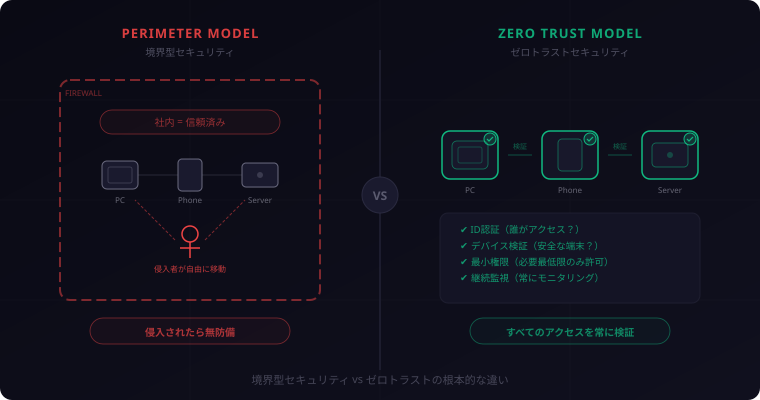
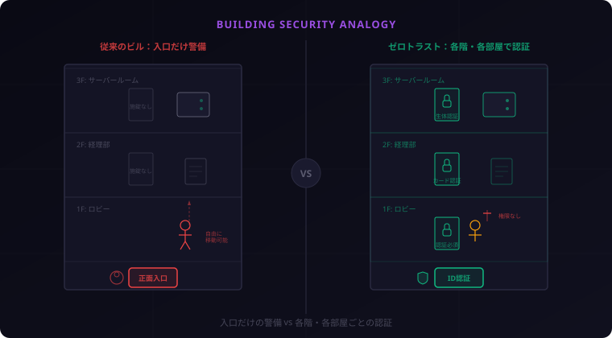

Aegis
Aegis
ゼロトラスト入門 ― 「何も信頼しない」が最強のセキュリティである理由
「社内ネットワークだから安全」——その前提が、いま音を立てて崩れています。リモートワークの普及、クラウドへの移行、そして巧妙化するサイバー攻撃。従来の「壁で囲って守る」セキュリティでは、もう限界です。今回は、その限界を根本から覆す考え方「ゼロトラスト」について、仕組みから導入ステップまで丁寧に解説します。
1. 「社内ネットワーク＝安全」の時代は終わった
長らく、企業のセキュリティは「境界型」モデルが主流でした。ファイアウォールやVPNで社内と社外の境界線を引き、「壁の内側は安全、外側は危険」と区別する。城壁で守られた城のようなイメージです。
境界型モデルが機能していた時代
この考え方は、社員がオフィスのPCから社内ネットワークにアクセスしていた時代にはうまく機能していました。守るべきデータも、アクセスする人も、すべてが「壁の内側」にあったからです。
環境の激変
しかし、いまの企業環境は激変しています。
- リモートワークの常態化: 社員は自宅やカフェから、私物のデバイスで業務システムにアクセスする
- クラウドサービスの普及: データはオンプレミスのサーバーではなく、AWS・Azure・GCPなどのクラウド上にある
- SaaS利用の拡大: Slack、Google Workspace、Salesforceなど、業務データがさまざまなクラウドサービスに分散している
- BYODの浸透: 個人のスマートフォンやタブレットが業務に使われる
「壁の内側」と「外側」の区別が曖昧になった結果、境界型モデルの前提そのものが崩壊しています。
VPN依存のリスク
「リモートワークにはVPNがあるじゃないか」——そう思う方もいるでしょう。たしかにVPNはリモートアクセスの定番手段ですが、大きな問題を抱えています。
VPNは「一度認証を通れば社内ネットワークに入れる」仕組みです。つまり、VPNの認証さえ突破されれば、攻撃者は社内ネットワーク全体に自由にアクセスできてしまいます。実際、VPNの脆弱性を突いた大規模な情報漏洩事件は後を絶ちません。
さらに、VPNは同時接続数やパフォーマンスにも課題があり、全社員がリモートワークする状況では帯域のボトルネックにもなります。
2. ゼロトラストとは何か
ここで登場するのが「ゼロトラスト（Zero Trust）」という考え方です。
「Never Trust, Always Verify」
ゼロトラストの根本原則は非常にシンプルです。
「何も信頼しない。常に検証する（Never Trust, Always Verify）」
社内ネットワークからのアクセスであっても、社外からのアクセスであっても、すべてを等しく「信頼できないもの」として扱い、アクセスのたびに認証と認可を行う。これがゼロトラストの基本姿勢です。
NISTによる定義
ゼロトラストは米国国立標準技術研究所（NIST）が2020年に公開したSP 800-207「Zero Trust Architecture」で体系化されました。NISTはゼロトラストを以下のように定義しています。
ゼロトラストとは、ネットワークの場所に関係なく、すべてのリソースへのアクセスに対して「信頼は暗黙的に付与されるものではなく、常に評価・検証されるべきもの」と捉えるセキュリティモデルである。
つまり、「どこにいるか」ではなく「誰が、どのデバイスで、何にアクセスしようとしているか」を常に確認するということです。
境界型 vs ゼロトラスト
| 項目 | 境界型セキュリティ | ゼロトラスト |
|---|---|---|
| 基本思想 | 壁の内側は信頼できる | 何も信頼しない |
| 認証タイミング | 壁を通過するときだけ | すべてのアクセスのたびに |
| 侵入後の被害 | 内部を自由に移動可能 | 個々のリソースで再認証が必要 |
| リモートワーク対応 | VPN依存（ボトルネック化） | 場所に依存しない設計 |
| クラウド対応 | 境界の外にデータがある矛盾 | クラウドネイティブに適合 |

3. ゼロトラストを支える5つの柱
ゼロトラストは単一の製品や技術ではなく、複数の要素を組み合わせたセキュリティモデルです。ここでは、ゼロトラストを支える5つの柱を解説します。
柱1: ID認証（Identity）
すべてのアクセスの出発点は「誰がアクセスしているのか」の確認です。ユーザー名とパスワードだけでなく、多要素認証（MFA）やパスキーを組み合わせ、本人確認の精度を高めます。
さらに、ユーザーの行動パターン（普段と異なる場所からのアクセス、異常な時間帯のログインなど）をリアルタイムで分析し、リスクに応じて追加の認証を要求する「リスクベース認証」も重要な要素です。
柱2: デバイス検証（Device）
「誰が」だけでなく「どのデバイスで」アクセスしているかも重要です。OSのバージョンが最新か、セキュリティパッチが適用されているか、マルウェアに感染していないか——デバイスの健全性を常にチェックします。
会社支給の管理端末だけでなく、BYODの個人端末についても一定のセキュリティ基準を満たしているか検証し、基準を満たさない端末からのアクセスは制限します。
柱3: ネットワークセグメンテーション（Network）
従来のフラットなネットワーク（一度入れば何でもアクセスできる構造）ではなく、ネットワークを細かく分割する「マイクロセグメンテーション」を実施します。
たとえば、経理システムのネットワークと開発環境のネットワークを論理的に分離し、経理部門のアカウントからは開発環境にアクセスできないようにする。万が一ひとつのセグメントが侵害されても、被害が他に波及しにくくなります。
柱4: アプリケーション制御（Application）
アプリケーションレベルでもアクセス制御を行います。ユーザーの役割に応じて「最小権限の原則」を適用し、業務に必要な最低限のアプリケーションとデータだけにアクセスを許可します。
たとえば、マーケティング部門の社員が人事データベースにアクセスする必要はありません。不要な権限を与えないことで、内部不正や誤操作によるリスクを最小化します。
柱5: データ保護（Data）
最終的に守るべきはデータそのものです。データの分類（機密レベルの設定）、暗号化（保存時・転送時）、アクセスログの記録と監視を徹底します。
重要なのは、データがどこにあっても（オンプレミス、クラウド、社員のデバイス上）一貫した保護ポリシーを適用することです。
4. 身近な例で理解するゼロトラスト
概念だけでは掴みにくいので、身近な例で考えてみましょう。
オフィスビルのたとえ
従来の境界型セキュリティは、「1階の正面入口にだけ警備員がいるオフィスビル」のようなものです。入口でIDカードをチェックすれば、あとは各階のどの部屋にも自由に出入りできます。
一方、ゼロトラストは「各階のエレベーターホール、各部屋のドアすべてに認証装置があるビル」です。1階の入口を通過しても、3階のサーバールームに入るにはさらに別の認証が必要。2階の経理部に入るにも、その部屋専用の権限が求められます。
面倒に見えるかもしれません。しかし、もし不審者が1階の警備を突破したとしても、各階・各部屋の認証があるため、被害は最小限に抑えられます。
Google BeyondCorp: ゼロトラストの先駆者
ゼロトラストを最も早く実践した企業のひとつがGoogleです。
2009年、Googleは「Operation Aurora」と呼ばれる高度なサイバー攻撃を受けました。この経験をきっかけに、Googleは社内ネットワークの信頼を前提としないセキュリティモデル「BeyondCorp」を開発。VPNを廃止し、すべてのアクセスをインターネット経由に統一した上で、ユーザーとデバイスの信頼度をリアルタイムで評価する仕組みを構築しました。
BeyondCorpの導入により、Googleの社員はオフィスでも自宅でもカフェでも、同じセキュリティポリシーのもとで業務システムにアクセスできるようになりました。ゼロトラストが「理論」ではなく「実践」として機能することを証明した事例です。

5. 導入のロードマップ
ゼロトラストは「一晩で完成する」ものではありません。段階的に導入していくのが現実的です。ここでは5つのステップを紹介します。
ステップ1: 現状把握
まず自社の現状を正確に把握します。
- どんなデータを持っていて、どこに保存されているか
- 誰が（ユーザー）、どのデバイスから、何にアクセスしているか
- 現在の認証方式はどうなっているか（パスワードだけ？MFAは？）
- ネットワークの構成はどうなっているか
守るべきものがわからなければ、守りようがありません。棚卸しから始めましょう。
ステップ2: ID認証の強化
最もインパクトが大きく、比較的すぐに着手できるのがID認証の強化です。
- 全アカウントへの多要素認証（MFA）の適用
- シングルサインオン（SSO）の導入によるID管理の一元化
- パスキーなどフィッシング耐性のある認証方式の検討
パスワードだけの認証を残しているシステムがあるなら、ここが最初の着手ポイントです。
ステップ3: デバイス管理
MDM（モバイルデバイス管理）やEDR（エンドポイント検知・対応）を導入し、アクセスするデバイスの健全性を把握・管理します。
- OSやソフトウェアが最新の状態か確認
- セキュリティポリシーに準拠しているか判定
- 準拠していないデバイスからのアクセスを制限
ステップ4: マイクロセグメンテーション
ネットワークを論理的に分割し、各セグメント間のアクセスを制御します。全社員が全リソースにアクセスできる「フラットなネットワーク」を脱却し、必要な人が必要なリソースにだけアクセスできる構成に移行します。
ステップ5: 継続的な監視と改善
ゼロトラストは「導入して終わり」ではなく、継続的なプロセスです。
- すべてのアクセスログを収集・分析する
- 異常な振る舞いをリアルタイムで検知する
- 脅威の変化に応じてポリシーを更新する
SIEM（セキュリティ情報イベント管理）やSOAR（セキュリティオーケストレーション）などのツールを活用し、監視と対応を自動化していくことが重要です。
「うちの規模だと大掛かりすぎる」と感じるかもしれません。しかし、ステップ2のMFA導入だけでも効果は絶大です。すべてを一気にやる必要はありません。ステップ1と2から始めれば、それだけでセキュリティレベルは大きく向上します。
6. よくある誤解
ゼロトラストに関しては、いくつかの根強い誤解があります。ここで一つずつ解消しておきましょう。
誤解1: 「製品を買えば完成する」
これが最も多い誤解です。「ゼロトラスト対応」を謳う製品は数多く存在しますが、ゼロトラストは製品ではなく、考え方・アーキテクチャです。
特定のベンダーの製品を導入すれば自動的にゼロトラストになるわけではありません。自社の環境に合わせて、認証・デバイス管理・ネットワーク・データ保護を組み合わせた設計が必要です。製品はその設計を実現するための道具に過ぎません。
誤解2: 「中小企業には不要」
「ゼロトラストはGoogleのような大企業だけのもの」という認識も間違いです。むしろ、中小企業こそサイバー攻撃のターゲットにされやすいのが現実です。
大企業ほど高度なセキュリティ体制を持たない中小企業は、攻撃者にとって「コスパの良い標的」です。そして中小企業が踏み台にされ、取引先の大企業に侵入する「サプライチェーン攻撃」も増加しています。
ゼロトラストの原則はスケールに依存しません。MFAの導入、不要な権限の見直し、クラウドサービスのアクセス制御強化——これらは中小企業でもすぐに始められます。
誤解3: 「ユーザー体験が悪化する」
「認証が増える＝面倒になる」というイメージは理解できます。しかし、適切に設計されたゼロトラストは、むしろユーザー体験を向上させることがあります。
たとえば、リスクベース認証を導入すれば、普段通りのアクセスパターンでは追加認証なしでスムーズにログインでき、異常なアクセスのときだけ追加認証が求められます。VPNの接続待ちやパフォーマンス低下がなくなる点も、ユーザーにとってはメリットです。
パスキーやSSOの活用で「パスワードを入力する回数」はむしろ減ります。セキュリティと利便性は、ゼロトラストにおいてはトレードオフではありません。
7. まとめ
今日からできる3つのアクション
- すべてのアカウントでMFA（多要素認証）を有効にする。個人のGoogleアカウント、Microsoft アカウント、GitHubなどから。パスキーに対応しているならパスキーを設定する
- 「最小権限」の観点で棚卸しする。自分がアクセスできるシステムやデータのうち、本当に必要なものはどれか。管理者であれば、不要な権限が残っていないか確認する
- VPN依存を見直す。社外からのアクセスをすべてVPN経由にしているなら、クラウドサービスのネイティブなアクセス制御（Azure ADの条件付きアクセス、Google Workspaceのコンテキストアウェアアクセスなど）への移行を検討する
ゼロトラストは「完成」しない
ゼロトラストは目的地ではなく、旅路です。完璧なゼロトラストなど存在しません。脅威は日々進化し、ビジネス環境も変化し続けます。大切なのは、「何も信頼しない」という原則を持ち続け、継続的に改善していくことです。
境界型セキュリティが「城壁」だとすれば、ゼロトラストは「免疫システム」です。外から来る脅威だけでなく、内部の異変にも反応し、常に全身をモニタリングしている。組織のセキュリティをそのレベルに引き上げていく——それがゼロトラストの本質です。
「ゼロトラスト」と聞くと大げさに感じるかもしれませんが、その本質は「当たり前のことを、当たり前にやる」ことです。MFAを有効にする。不要な権限を削除する。アクセスログを確認する。一つひとつは小さなことですが、積み重ねれば組織のセキュリティは確実に変わります。まず守りを固めましょう。
5つの柱を一度にすべて完璧に実装する必要はありません。大事なのは「どれかひとつの柱が突破されても、他の柱で被害を食い止められる」という多層防御の考え方です。一つずつ着実に積み上げていきましょう。